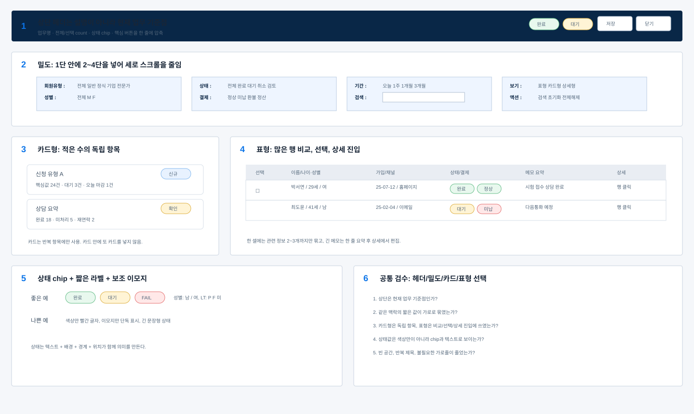

목록 테이블셀 데이터표현 기준
1. 대분류: 테이블의 기본 원칙
1.1 중분류: 한 행은 하나의 데이터 단위
소분류:
- 회원 테이블은 한 행이 한 명이다.
- 결제 테이블은 한 행이 한 결제 건이다.
- 상담 테이블은 한 행이 한 상담 건이다.
- 한 행 안에 서로 다른 주체를 섞지 않는다.
1.2 중분류: 첫 열과 선택
소분류:
- checkbox 열은 좁게 둔다.
- checkbox와 행 클릭은 서로 충돌하지 않게 한다.
- 선택된 행은 배경, 좌측 인디케이터, aria 상태로 표시한다.
2. 대분류: 셀 안 데이터 묶기
2.1 중분류: 한 셀에 2-3개 정보
같은 맥락의 짧은 정보는 한 셀에 묶어 세로와 가로 공간을 줄인다.
예시:
이름: 김선수 / 34세 / 남
가입: 25-03-15 / 이메일
최근 로그인: 26-02-08 / 42m
전문가: Lv.A / 4.8
소분류:
- 주값은 굵게 또는 먼저 표시한다.
- 보조값은 작게 표시한다.
- 값 사이 구분은 slash, dot, 줄바꿈 중 가장 짧은 것을 선택한다.
- 같은 셀에 긴 문장 2개를 넣지 않는다.
2.2 중분류: 한 줄 유지
소분류:
- 관리번호, 상태, 등급, 날짜는 한 줄로 유지한다.
- 이름+나이+성별은 한 줄 또는 2줄 안에서 끝낸다.
- 이메일과 전화번호는 너무 길면 2줄까지 허용한다.
- 메모는 한 줄 요약 후 상세에서 전체를 본다.
3. 대분류: 날짜, 연도, 시간 표기
3.1 중분류: 테이블 날짜
소분류:
- 테이블은
YY-MM-DD를 기본으로 한다.
- 날짜와 채널은
25-03-15 / 이메일처럼 묶을 수 있다.
- 최근 로그인은 날짜와 체류시간을 함께 보여준다.
3.2 중분류: 상세 날짜
소분류:
- 입력 가능한 날짜는 date 또는 datetime-local을 쓴다.
- 달력 선택이 가능해야 한다.
- 회계/납부 날짜는 직접 입력보다 달력 선택을 우선한다.
- 화면에 보이는 입력값, 안내값, 선택 결과는 모두
YY-MM-DD로 표시한다.
3.3 중분류: 연도
소분류:
- 목록, 상세, 입력, 회계, 법적 근거를 포함해 화면에 보이는 날짜는 예외 없이
YY-MM-DD로 쓴다.
- 날짜와 시간이 함께 필요하면
YY-MM-DD HH:mm으로 쓴다.
- 브라우저·서버·DB 내부 값이
YYYY-MM-DD여도 해당 원본 형식을 화면에 노출하지 않는다.
4. 대분류: 테이블 폭과 스크롤
4.1 중분류: 폭 배분
소분류:
- checkbox, 등급, 상태는 좁게 둔다.
- 이름, 이메일, 주소, 메모는 상대적으로 넓게 둔다.
- 긴 주소와 긴 메모를 동시에 넓게 두지 않는다.
- 오른쪽 상세가 닫혔을 때 테이블은 전체 폭을 사용한다.
4.2 중분류: 가로 스크롤
소분류:
- 많은 열이 필요하면 가로 스크롤을 허용한다.
- 중요한 열은 왼쪽에 둔다.
- 스크롤 때문에 주요 상태가 보이지 않으면 열 묶음을 다시 조정한다.
5. 대분류: 메모와 긴 값
5.1 중분류: 목록 메모
소분류:
- 목록에서는 한 줄 요약만 표시한다.
- 전체 메모는 상세보기에서 편집한다.
- 메모 열이 너무 넓어 테이블을 망치지 않게 한다.
5.2 중분류: 상세 메모
소분류:
- 상담내용, 운영메모, 처리메모는 상세 패널에 둔다.
- 이력 로그와 현재 입력 메모는 분리한다.
- 누적 이력을 textarea 하나에 합치지 않는다.
공통 샘플: 밀도·헤더·카드형·표형 기준

샘플 번호 기준:
- 1번: 상단 헤더는 업무명, count, 상태 chip, 주요 버튼을 한 줄에 압축한다.
- 2번: 1단 안에 2~4단을 넣어 짧은 조건과 값을 가로로 묶는다.
- 3번: 카드형은 적은 수의 독립 항목이나 요약 패널에만 쓴다.
- 4번: 표형은 많은 행을 비교, 선택, 상세 진입해야 할 때 쓴다.
- 5번: 상태는 chip과 짧은 label로 표시하고, 이모지는 보조 신호로만 제한한다.
- 6번: 최종 검수는 헤더, 밀도, 카드/표 선택, 상태 표현, 빈 공간을 함께 확인한다.
6. 요약표
| 항목 | 기준 |
|---|
| 행 | 하나의 데이터 단위 |
| 셀 | 같은 맥락 2-3개 정보 묶기 |
| 날짜 | 모든 화면 표시는 YY-MM-DD, 입력은 달력 |
| 폭 | 짧은 값은 좁게, 긴 값은 필요한 만큼 |
| 메모 | 목록은 요약, 상세에서 전체 |
| 스크롤 | 많은 열은 가로 스크롤 허용 |